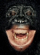
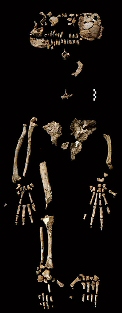

Estoy segura de que mis perras no creen en Dios. Esta enunciación la infiero al observar sus conductas ya que sus actos están más vinculados a realidades básicas: alimento, juego, olfateo y territorialidad (el orden del lugar lo determina las circunstancias) que a ritos concebidos para la adoración de seres invisibles. Sin embargo, esta carencia de religiosidad en mis acompañantes caninas no se traduce en la ausencia de ciertos ejercicios éticos que nos permiten compartir el hábitat; reglas que nos acompañan durante el juego, inhibiendo la fuerza de sus mordidas, no sólo contra mi mano sino contra los cuellos de las demás miembros del grupo. Existen normas para distintas actividades, en el juego nos divertimos y no agredimos, durante la comida cada cual tiene su plato, pero de acuerdo al establecimiento de jerarquías, así repartirán entre ellas el alimento; tanto el Homo sapiens como los demás animales en el planeta compartimos grados diversos de estas reglas.

Entre especies salvajes las normas también están robustamente cimentadas. En las últimas décadas, la ciencia se ha enriquecido enormemente con el estudio animal. Un sinnúmero de investigadores se ha trasladado al ambiente de distintas especies, estudiando sus conductas diversas y el resultado ha devuelto una naturaleza exuberante con la que compartimos, más que genes (que ya es mucho), una inmensidad de comportamientos que aunque gran parte se derive de los genomas, otros son producidos y pulidos en esa esencial e inevitable simbiosis que asumimos con el medio. Más aún, entre los organismos con grandes cortezas cerebrales, explica Peter Gärdenfors, profesor de ciencias cognitivas en la Universidad de Lund, como ocurre en los mamíferos y las aves, existe la habilidad para jugar y soñar, cualidades que brillan por su ausencia en el mundo reptil. Por eso es tan divertido tener un perro (o hasta una cotorrita) en comparación con una iguana, por ejemplo, quien tendrá más consideraciones con los rayos del Sol que con quien le sirve la comida. Son también numerosos los videos y las historias de animales que salvan la vida no sólo a individuos de su propia especie sino de otras, incluyendo la humana. Una búsqueda tanto en Google como en YouTube lo mantendrá apegado a sus pantallas durante horas.

La capacidad de representación del mundo interior en cada especie, como propone Gärdenfors, permite que estos organismos con el cerebro más complejo puedan reproducir al mundo dentro de sus cabezas y así organizar y planificar estrategias en vez de actuar instintivamente frente a los estímulos del medio. Es decir, un ratón, uno de los mejores modelos de inteligencia mamífera, buscará la mejor forma de llegar al queso sin ser atrapado por don gato porque su cerebro es capaz de planificar estrategias y descartar las que no le servirán; así, “las hipótesis mueren pero ellos no”. Es un mecanismo clave de supervivencia que nos va mostrando cómo nace y se desarrolla el sentido de ética. Al final dependerá del tipo de cerebro que despliegue la especie y su capacidad para hacer representaciones separadas de la realidad en su mundo interior.
Y hablo de ética, no de moral. La moral humana lleva un juicio detrás y en la mayoría de las ocasiones no tiene que ver con lo correcto ni lo incorrecto de nuestras decisiones. Tomemos por ejemplo una enseñanza moral religiosa que dicta que las mujeres deben llegar vírgenes al matrimonio. Esta norma es arbitraria, además de discriminatoria, pues no está basada en cuestionamientos sobre el bien y el mal. La virginidad de la mujer (o del hombre) y lo que cada cual haga con ella, no acarrea daños a secundarios ni promueve crímenes, hambrunas o desastres mayores. Contrariamente, la norma también religiosa en contra del uso del condón y de los anticonceptivos, sí engendra ramificaciones nocivas para toda la sociedad, desde la desinformación y los embarazos no deseados hasta los abortos ilegales de alto riesgo y la muerte por Sida y otras enfermedades. Estos hechos ejemplifican mi preferencia por hablar del sentido de ética y no de la moral. La moral humana no es una guía precisa sobre lo que está bien y lo que está mal porque juzga basada en expectativas subjetivas que no implican una verdadera amenaza contra la especie. Irónicamente y de forma simultánea, estos juicios moralistas justifican conductas e ideas que sí perjudican al colectivo. Veamos por qué considero pertinente tener en cuenta estas diferencias.

Para alcanzar cierto grado básico de ética debemos desarrollar empatía y conductas altruistas. Si usted piensa que los humanos somos los únicos capaces de ello pues me place mostrarle su equivocación. Hablemos un poco de los charlatanes, un nombre inapropiado para estas aves típicas del viejo mundo que son conocidas en el habla inglesa como Babblers. Los charlatanes ejecutan actos altruistas con regularidad, proporcionan comida gratis a sus compañeros y avisan de cualquier peligro que se aproxime, arriesgando en el proceso sus propias vidas. Para explicar conductas como éstas, los biólogos evolutivos suelen preguntarse si el animal espera beneficios en algún comportamiento recíproco por parte del grupo o si los individuos que están siendo beneficiados son familiares cercanos del que está haciendo el favor. Pero no siempre las conductas reflejan estas necesidades básicas de nuestras “egoístas” unidades genéticas. El zoólogo israelí Amotz Zahavi propone otra causa: el altruismo como señal de superioridad. Algo que puede motivar a una cantidad innumerable de humanos también. Para Zahavi, estos actos de “bondad” son una forma de decir (valga el antropomorfismo), “mírenme, soy superior, proporciono alimento y no le temo a nada”, parafraseando la interpretación de Richard Dawkins en El espejismo de Dios. El altruista hace favores y sucumbe al derroche y al heroísmo como una forma de mostrar que tiene más que los demás y que es valiente; entre humanos he visto esta cualidad convertirse también en una proposición, una seca danza de coqueteo desesperado.
Inevitablemente, la vida en grupos sociales requiere de la aparición de estas propiedades. Ser altruistas, poseer empatía y hacer lo correcto tiene incontables beneficios en la vida grupal y por eso todos poseemos distintos niveles de estas características que, además, han sido demostradas en complicadas teorías de juego y proposiciones matemáticas que describen el futuro de los distintos grupos si no son promovidas entre sus miembros. Estas teorías de juego asumen entre sus emblemas básicos la detección de tramposos y personajes fraudulentos que pongan en peligro el equilibrio de todo el esquema social. Detectar estas manzanas podridas no sólo libera a los demás miembros de esta amenaza sino que daña la reputación de dicho miembro y lo pone en desventaja frente a los demás. Así, cierta desconfianza es establecida y será difícil que el individuo logre engañar a otros que ya han sido informados. Para percibir el valor real de la reputación en estos esquemas éticos sólo piense en la importancia que tiene este elemento en su vida (tanto en la romántica como en la profesional, la económica y la social) así vislumbrará su impacto al moldear nuestras conductas hacia la ejecución de acciones que no la pongan en peligro.
Es por eso que me parece tan sano el escepticismo y tan importante compartir información sobre charlatanes, y esta vez no me refiero a las aves. A los humanos se nos ha complicado el terreno por la cantidad de personas que existimos en la actualidad. En un grupo pequeño de altruistas que trabajan por el bienestar conjunto, al chantajista se le intrinca el engaño, su mala reputación no tarda en llegar a todos los contribuyentes y prontamente se encontrará aislado. Los animales rechazados por el grupo no sobreviven por mucho tiempo a menos que sean adoptados por otros colectivos y, al chantajista, le costará al menos aprender a vivir de acuerdo a nuevas normas. Pero las sociedades humanas reinantes son exageradamente enredadas y tantas veces primitivas que permiten la constante aparición de personajes fraudulentos cuyas reputaciones son mucho más difíciles de exponer debido a las variadas creencias que pueblan nuestras culturas. El tan enriquecido mundo interior humano aloja fantasías como si fuesen realidades, algo impensable en los cerebros de otros animales más sintonizados con sus ambientes y, por ende, su realidad. Orar por una buena cacería y confiar que será suficiente no es una estrategia efectiva para el león y el hecho de que lo sea (y haya sido) para un gran número de humanos nos ha alejado de las demás especies y del planeta como entidad, encerrándonos en una burbuja y cercándonos de nuestros verdaderos orígenes. Los resultados de esta separación son evidentes. Sino mire en las condiciones en que se encuentra la Tierra hoy, además, las predicciones futuras no son nada atractivas.
Tristemente, los seres humanos no vamos lejos para creer febrilmente que un planeta inexistente conocido como Nibiru terminará con nuestro globo en el 2012 mientras renegamos hasta la muerte del calentamiento global. La posición más cómoda es, por lo general, la triunfante.
En mi familia no adoramos dioses pero sí promulgamos un fuerte sentido de ética y de respeto mutuo. Entendemos que sin estas características, el mundo que deseamos disfrutar nunca llegará a ocurrir, no mientras una gran mayoría se dedique a emitir juicios, condenar de forma arbitraria y dejarle los problemas graves a sus deidades. Mientras la ética no reemplace la moral en un mundo secular, me temo que no lograremos resolver el hambre, la discriminación y la muerte innecesaria entre nuestra especie, mucho menos cuidar de las demás. Sólo continuaremos promoviendo un comportamiento agresivo, egoísta y juicioso cuyas consecuencias son evidentemente perjudiciales para todos. Como bien lo expresó Gärdenfors en su libro, Cómo el homo se convirtió en sapiens, “sobre la base de un modelo de inversión donde la divisa es la confianza, es posible alcanzar una explicación racional de la decencia del día a día”.
No necesitamos de dioses para ser decentes, de hecho, la mayoría de las religiones dominantes no ha contribuido, como se piensa, incentivando estos dotes; más aún, los animales utilizan distintos grados de ellos y no necesitan temerle a los dioses para actuar de acuerdo a las normas éticas del grupo.
Como humanos poseemos menos límites, más opciones. Nuestro cerebro permite que avancemos varios pasos por delante de las demás especies al dotarnos con autoconciencia y libre albedrío, elementos que se encuentran entre las últimas fases de Gärdenfors hacia la “moralidad”. Está en nosotros sopesar cada una de esas posibilidades y elegir de acuerdo a nuestro bienestar o al de todos; con el conocimiento, sin lugar a dudas, de que en la mayoría de las ocasiones encontraremos una opción donde en el bien colectivo también descubriremos nuestro bienestar. Somos éticos gracias a esta realidad, no a la religión.
Las buenas nuevas de “Ardi”
¿Un ancestro menos agresivo?
Si tuviera que identificarme con un primate optaría por el bonobo. “Con los bonobos todo es pacífico. Cuando los observo siempre parece que están disfrutando de sus vidas”, explicó Takeshi Furuichi, el científico que más extensivamente ha estudiado a ambos los chimpancés y los bonobos. A pesar de que algunos científicos han intentado refutar los informes sobre la estupenda personalidad de estos animales, los primatólogos que conocen el tema a cabalidad siguen sorprendidos por la ausencia de agresividad entre esa especie. No sólo resuelven sus conflictos con favores sexuales y actos de cariño sino que sus sociedades son matriarcados donde la colaboración pacífica es promovida. “Desde 1970, la ideología reinante entre antropólogos estaba basada en un ancestro agresivo, el llamado Simio Asesino, muy parecido a los chimpancés. Precisamente, es este retrato que el descubrimiento de Ardi ha llegado a poner en duda”, expresó el primatólogo Frans de Waal.
Ahora bien, esto no quiere decir que no seamos primos del chimpancé, hecho indudable corroborado por la comparación entre nuestros genomas, lo que sí nos dice es que el ancestro que nos unió con ellos alguna vez es quizá mucho más parecido a los bonobos que al chimpancé mismo. Ardi (Ardipithecus ramidus), un fósil de 4,4 millones de años de antigüedad, poseía colmillos pequeños y para nada afilados. Esta característica, además de distinguirla de los chimpancés, sugiere otro estilo de vida. “Es posible que aquel lejano ancestro desde donde provenimos, haya tenido una vida menos agresiva que la que observamos en el chimpancé. Yo mismo he visto, durante mis años de estudio y observación, un sinnúmero de conflictos entre estos simios donde la agresividad y el asesinato cierran el trato. Con los bonobos es distinto, y seré lo más específico posible, no existe ningún reporte confirmado de actos agresivos y de asesinatos entre bonobos, ni en cautiverio ni en su hábitat natural”, escribió De Waal.

Ante estas permutaciones vitales, la antropología debe mantenerse abierta a nuevas posibilidades. No estaría nada mal cambiar el modelo de un progenitor común parecido al agresivo chimpancé por otro semejante al pacífico bonobo; a lo mejor, integrar este nuevo meme, que confiere a la madre de los homíninos con un estilo de vida distinto, transforme la forma en que actuamos. Entiendo que esta esperanza es tan obtenible como pedir dioses racionales e historias menos sangrientas en las religiones de nuestros pueblos, pero poco a poco se transforman las sociedades y el conocimiento es el mejor impulso para que ocurra.
Me gusta la idea de que Ardi se encuentre entre nuestros antecesores buscados, me encanta que tenga más en común con los bonobos que con los chimpancés y me fascina la idea de sustituir el simio asesino de nuestra genealogía con el hippie pacífico que caminaba tanto erguido como entre las ramas. Dudo que Ardi haya tenido dioses, como no los tienen ni lo bonobos ni los chimpancés, aún así, es posible que fuese mucho más apacible, quieta y serena que muchos religiosos que conozco. No hay que proclamarse creyente para desear y promover la paz ni para encontrarla personalmente y no me avergüenza admitir que me complace en demasía pensar que la madre de los homíninos era una simia afín al hippie bonobo.
Volver al índice de la Lupa Herética
© 2008-2025 Glenys Álvarez y Sin Dioses. Prohibida la reproducción con fines comerciales.
Comentarios
Comments powered by Disqus